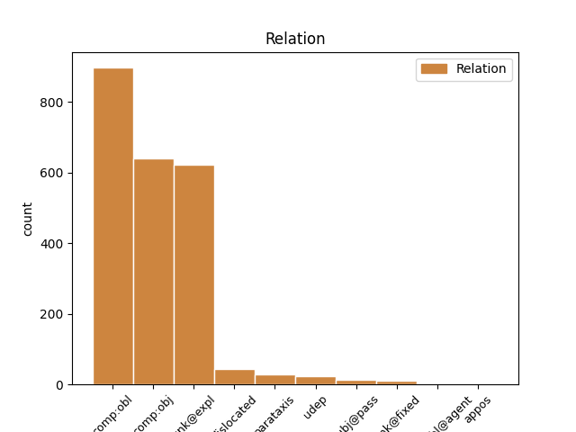
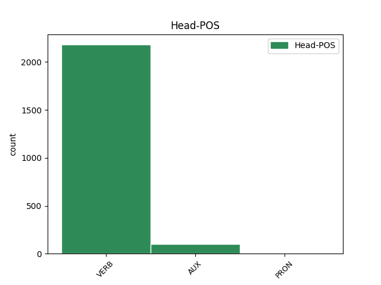
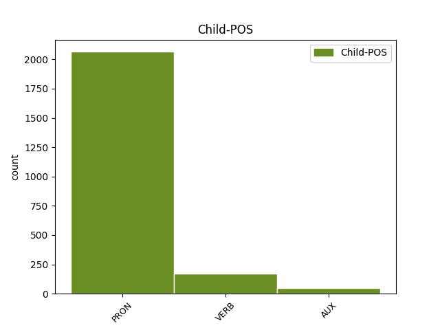

Distribution of features within this leaf



Agreement Rules sorted by frequency.
- When the dependent token is the oblique complements(comp:obl) of the head token, and the dependent token is PRON.
1 г҃ла глаголати VERB V- Aspect=Perf|Mood=Ind|Number=Sing|Person=3|Tense=Past|VerbForm=Fin|Voice=Act 0 _ _ _
2 емоу и PRON Pp Case=Dat|Gender=Masc|Number=Sing|Person=3|PronType=Prs 1 comp:obl _ ref=JOHN_20.29
3 и҃съ _ _ _ _ 0 _ _ _
4 ѣко _ _ _ _ 0 _ _ _
1 ꙇмъже _ _ _ _ 0 _ _ _
2 отъпоустите _ _ _ _ 0 _ _ _
3 грѣхꙑ _ _ _ _ 0 _ _ _
4 отъпоустѧтъ отъпоустити VERB V- Mood=Ind|Number=Plur|Person=3|Tense=Pres|VerbForm=Fin|Voice=Act 0 _ _ _
5 сѧ себе PRON Pk Case=Acc|Number=Sing|Person=3|PronType=Prs|Reflex=Yes 4 unk@expl _ ref=JOHN_20.23
6 имъ _ _ _ _ 0 _ _ _
1 вьзѧсѧ _ _ _ _ 0 _ _ _
2 г҃а _ _ _ _ 0 _ _ _
3 моего _ _ _ _ 0 _ _ _
4 ꙇ _ _ _ _ 0 _ _ _
5 не _ _ _ _ 0 _ _ _
6 вѣмь _ _ _ _ 0 _ _ _
7 кьде _ _ _ _ 0 _ _ _
8 положишѧ положити VERB V- Aspect=Perf|Mood=Ind|Number=Plur|Person=3|Tense=Past|VerbForm=Fin|Voice=Act 0 _ _ _
9 и и PRON Pp Case=Acc|Gender=Masc|Number=Sing|Person=3|PronType=Prs 8 comp:obj _ ref=JOHN_20.13
1 рабъ _ _ _ _ 0 _ _ _
2 бо _ _ _ _ 0 _ _ _
3 не _ _ _ _ 0 _ _ _
4 вѣстъ вѣдѣти VERB V- Mood=Ind|Number=Sing|Person=3|Tense=Pres|VerbForm=Fin|Voice=Act 0 _ _ _
5 что _ _ _ _ 0 _ _ _
6 творитъ творити VERB V- Mood=Ind|Number=Sing|Person=3|Tense=Pres|VerbForm=Fin|Voice=Act 4 comp:obj _ ref=JOHN_15.15
7 г҃ъ _ _ _ _ 0 _ _ _
8 его _ _ _ _ 0 _ _ _
1 егда _ _ _ _ 0 _ _ _
2 възнесете възнести VERB V- Mood=Ind|Number=Plur|Person=2|Tense=Pres|VerbForm=Fin|Voice=Act 6 dislocated _ ref=JOHN_8.28
3 с҃на _ _ _ _ 0 _ _ _
4 ч҃лвчскааго _ _ _ _ 0 _ _ _
5 тъгда _ _ _ _ 0 _ _ _
6 разоумѣате разоумѣти VERB V- Mood=Ind|Number=Sing|Person=2|Tense=Pres|VerbForm=Fin|Voice=Act 0 _ _ _
7 ѣко _ _ _ _ 0 _ _ _
8 азъ _ _ _ _ 0 _ _ _
9 есмъ _ _ _ _ 0 _ _ _
10 ꙇ _ _ _ _ 0 _ _ _
11 о _ _ _ _ 0 _ _ _
12 себѣ _ _ _ _ 0 _ _ _
13 ничесоже _ _ _ _ 0 _ _ _
14 не _ _ _ _ 0 _ _ _
15 творѭ _ _ _ _ 0 _ _ _
16 нъ _ _ _ _ 0 _ _ _
17 ѣкоже _ _ _ _ 0 _ _ _
18 наоучи _ _ _ _ 0 _ _ _
19 мѧ _ _ _ _ 0 _ _ _
20 о҃тцъ _ _ _ _ 0 _ _ _
21 мои _ _ _ _ 0 _ _ _
22 си _ _ _ _ 0 _ _ _
23 творѭ _ _ _ _ 0 _ _ _
1 г҃и _ _ _ _ 0 _ _ _
2 аште _ _ _ _ 0 _ _ _
3 тꙑ _ _ _ _ 0 _ _ _
4 еси _ _ _ _ 0 _ _ _
5 възѧлъ _ _ _ _ 0 _ _ _
6 повѣждь повѣдѣти VERB V- Mood=Imp|Number=Sing|Person=2|Tense=Pres|VerbForm=Fin|Voice=Act 0 _ _ _
7 мьнѣ _ _ _ _ 0 _ _ _
8 къде _ _ _ _ 0 _ _ _
9 и _ _ _ _ 0 _ _ _
10 еси бꙑти AUX V- Mood=Ind|Number=Sing|Person=2|Tense=Pres|VerbForm=Fin|Voice=Act 6 comp:obj _ ref=JOHN_20.15
11 положилъ _ _ _ _ 0 _ _ _
12 ꙇ _ _ _ _ 0 _ _ _
13 азъ _ _ _ _ 0 _ _ _
14 ꙇ _ _ _ _ 0 _ _ _
15 вьзъмѫ _ _ _ _ 0 _ _ _
1 вѣроуѩи _ _ _ _ 0 _ _ _
2 вь _ _ _ _ 0 _ _ _
3 мѧ _ _ _ _ 0 _ _ _
4 ѣкоже _ _ _ _ 0 _ _ _
5 кънигꙑ _ _ _ _ 0 _ _ _
6 рѣшѧ рещи VERB V- Aspect=Perf|Mood=Ind|Number=Plur|Person=3|Tense=Past|VerbForm=Fin|Voice=Act 11 parataxis _ ref=JOHN_7.38
7 рѣкꙑ _ _ _ _ 0 _ _ _
8 отъ _ _ _ _ 0 _ _ _
9 чрѣва _ _ _ _ 0 _ _ _
10 его _ _ _ _ 0 _ _ _
11 истекѫтъ истещи VERB V- Mood=Ind|Number=Plur|Person=3|Tense=Pres|VerbForm=Fin|Voice=Act 0 _ _ _
12 водꙑ _ _ _ _ 0 _ _ _
13 живꙑ _ _ _ _ 0 _ _ _
1 о҃тче _ _ _ _ 0 _ _ _
2 аще _ _ _ _ 0 _ _ _
3 волиши _ _ _ _ 0 _ _ _
4 мімо мимонести VERB V- Mood=Imp|Number=Sing|Person=2|Tense=Pres|VerbForm=Fin|Voice=Act 0 _ _ _
5 неси неси VERB V- Mood=Imp|Number=Sing|Person=2|Tense=Pres|VerbForm=Fin|Voice=Act 4 unk@fixed _ ref=LUKE_22.42
6 чашѫ _ _ _ _ 0 _ _ _
7 сиѭ _ _ _ _ 0 _ _ _
8 отъ _ _ _ _ 0 _ _ _
9 мене _ _ _ _ 0 _ _ _
1 равьви _ _ _ _ 0 _ _ _
2 ꙇже _ _ _ _ 0 _ _ _
3 бѣ бꙑти AUX V- Aspect=Imp|Mood=Ind|Number=Sing|Person=3|Tense=Past|VerbForm=Fin|Voice=Act 15 dislocated _ ref=JOHN_3.26
4 съ _ _ _ _ 0 _ _ _
5 тобоѭ _ _ _ _ 0 _ _ _
6 об _ _ _ _ 0 _ _ _
7 онъ _ _ _ _ 0 _ _ _
8 полъ _ _ _ _ 0 _ _ _
9 иоръдана _ _ _ _ 0 _ _ _
10 емоуже _ _ _ _ 0 _ _ _
11 тꙑ _ _ _ _ 0 _ _ _
12 съвѣдѣтельствова _ _ _ _ 0 _ _ _
13 се _ _ _ _ 0 _ _ _
14 сь _ _ _ _ 0 _ _ _
15 крьштаатъ крьщати VERB V- Mood=Ind|Number=Sing|Person=3|Tense=Pres|VerbForm=Fin|Voice=Act 0 _ _ _
16 и _ _ _ _ 0 _ _ _
17 вьси _ _ _ _ 0 _ _ _
18 грѧдѫтъ _ _ _ _ 0 _ _ _
19 къ _ _ _ _ 0 _ _ _
20 немоу _ _ _ _ 0 _ _ _
1 и _ _ _ _ 0 _ _ _
2 вꙑ _ _ _ _ 0 _ _ _
3 подобьни _ _ _ _ 0 _ _ _
4 ч҃лкомь _ _ _ _ 0 _ _ _
5 чаѭштемь _ _ _ _ 0 _ _ _
6 г҃а _ _ _ _ 0 _ _ _
7 своего _ _ _ _ 0 _ _ _
8 когда _ _ _ _ 0 _ _ _
9 възвратитъ _ _ _ _ 0 _ _ _
10 сѧ _ _ _ _ 0 _ _ _
11 отъ _ _ _ _ 0 _ _ _
12 бракъ _ _ _ _ 0 _ _ _
13 да _ _ _ _ 0 _ _ _
14 пришедъшю _ _ _ _ 0 _ _ _
15 и _ _ _ _ 0 _ _ _
16 тлъкнѫвъшю _ _ _ _ 0 _ _ _
17 абие _ _ _ _ 0 _ _ _
18 отвръзѫтъ отъврѣщи VERB V- Mood=Ind|Number=Plur|Person=3|Tense=Pres|VerbForm=Fin|Voice=Act 0 _ _ _
19 сѧ _ _ _ _ 0 _ _ _
20 емоу и PRON Pp Case=Dat|Gender=Masc|Number=Sing|Person=3|PronType=Prs 18 udep _ ref=LUKE_12.36
1 ꙇ _ _ _ _ 0 _ _ _
2 иже _ _ _ _ 0 _ _ _
3 вѣрѫ _ _ _ _ 0 _ _ _
4 иметъ _ _ _ _ 0 _ _ _
5 и _ _ _ _ 0 _ _ _
6 кръститъ _ _ _ _ 0 _ _ _
7 сѧ _ _ _ _ 0 _ _ _
8 съпасенъ _ _ _ _ 0 _ _ _
9 бѫдетъ _ _ _ _ 0 _ _ _
10 а _ _ _ _ 0 _ _ _
11 иже _ _ _ _ 0 _ _ _
12 не _ _ _ _ 0 _ _ _
13 иметъ ѩти VERB V- Mood=Ind|Number=Sing|Person=3|Tense=Pres|VerbForm=Fin|Voice=Act 16 subj@pass _ ref=MARK_16.16
14 вѣрꙑ _ _ _ _ 0 _ _ _
15 осѫжденъ _ _ _ _ 0 _ _ _
16 бѫдетъ бꙑти AUX V- Mood=Ind|Number=Sing|Person=3|Tense=Fut|VerbForm=Fin|Voice=Act 0 _ _ _
1 мꙑ мꙑ PRON Pp Case=Nom|Number=Plur|Person=1|PronType=Prs 4 subj@pass _ ref=JOHN_8.41
2 отъ _ _ _ _ 0 _ _ _
3 любодѣаниѣ _ _ _ _ 0 _ _ _
4 нѣсмъ не.бꙑти AUX V- Mood=Ind|Number=Plur|Person=1|Tense=Pres|VerbForm=Fin|Voice=Act 0 _ _ _
5 рождени _ _ _ _ 0 _ _ _
1 не _ _ _ _ 0 _ _ _
2 посъла _ _ _ _ 0 _ _ _
3 бо _ _ _ _ 0 _ _ _
4 б҃ъ _ _ _ _ 0 _ _ _
5 с҃на _ _ _ _ 0 _ _ _
6 своего _ _ _ _ 0 _ _ _
7 вь _ _ _ _ 0 _ _ _
8 миръ _ _ _ _ 0 _ _ _
9 да _ _ _ _ 0 _ _ _
10 содитъ _ _ _ _ 0 _ _ _
11 мироу _ _ _ _ 0 _ _ _
12 нъ _ _ _ _ 0 _ _ _
13 да _ _ _ _ 0 _ _ _
14 съпасетъ съпасти VERB V- Mood=Ind|Number=Sing|Person=3|Tense=Pres|VerbForm=Fin|Voice=Act 0 _ _ _
15 сѧ _ _ _ _ 0 _ _ _
16 миръ _ _ _ _ 0 _ _ _
17 имъ и PRON Pp Case=Ins|Gender=Masc|Number=Sing|Person=3|PronType=Prs 14 comp:obl@agent _ ref=JOHN_3.17
1 вꙑ вꙑ PRON Pp Case=Nom|Number=Plur|Person=2|PronType=Prs 15 dislocated _ ref=MATT_19.28
2 шедъшеи _ _ _ _ 0 _ _ _
3 по _ _ _ _ 0 _ _ _
4 мънѣ _ _ _ _ 0 _ _ _
5 въ _ _ _ _ 0 _ _ _
6 пакꙑбꙑтии _ _ _ _ 0 _ _ _
7 егда _ _ _ _ 0 _ _ _
8 сѧдетъ _ _ _ _ 0 _ _ _
9 с҃нъ _ _ _ _ 0 _ _ _
10 ч҃лвскꙑ _ _ _ _ 0 _ _ _
11 на _ _ _ _ 0 _ _ _
12 прѣстолѣ _ _ _ _ 0 _ _ _
13 славꙑ _ _ _ _ 0 _ _ _
14 своеѩ҅ _ _ _ _ 0 _ _ _
15 Сѧдете сѣсти VERB V- Mood=Ind|Number=Plur|Person=2|Tense=Pres|VerbForm=Fin|Voice=Act 0 _ _ _
16 и _ _ _ _ 0 _ _ _
17 вꙑ _ _ _ _ 0 _ _ _
18 на _ _ _ _ 0 _ _ _
19 дъвою _ _ _ _ 0 _ _ _
20 на _ _ _ _ 0 _ _ _
21 десѧте _ _ _ _ 0 _ _ _
22 прѣстолоу _ _ _ _ 0 _ _ _
23 сѫдѧште _ _ _ _ 0 _ _ _
24 обѣма _ _ _ _ 0 _ _ _
25 на _ _ _ _ 0 _ _ _
26 десѧте _ _ _ _ 0 _ _ _
27 колѣнома _ _ _ _ 0 _ _ _
28 и҃здраилвма _ _ _ _ 0 _ _ _
1 ꙇли _ _ _ _ 0 _ _ _
2 нѣстъ _ _ _ _ 0 _ _ _
3 ми азъ PRON Pp Case=Dat|Number=Sing|Person=1|PronType=Prs 0 _ _ _
4 лѣть _ _ _ _ 0 _ _ _
5 сътворити _ _ _ _ 0 _ _ _
6 въ _ _ _ _ 0 _ _ _
7 своихъ _ _ _ _ 0 _ _ _
8 ми азъ PRON Pp Case=Dat|Number=Sing|Person=1|PronType=Prs 3 appos _ ref=MATT_20.15
9 еже _ _ _ _ 0 _ _ _
10 хоштѫ _ _ _ _ 0 _ _ _
1 еда _ _ _ _ 0 _ _ _
2 могѫтъ _ _ _ _ 0 _ _ _
3 с҃нве _ _ _ _ 0 _ _ _
4 брачьнии _ _ _ _ 0 _ _ _
5 постити _ _ _ _ 0 _ _ _
6 сѧ _ _ _ _ 0 _ _ _
7 доньдеже _ _ _ _ 0 _ _ _
8 съ _ _ _ _ 0 _ _ _
9 ни и PRON Pp Case=Ins|Gender=Masc|Number=Plur|Person=3|PronType=Prs 0 _ _ _
10 ми ми PRON Pp Case=Ins|Gender=Masc|Number=Plur|Person=3|PronType=Prs 9 unk@fixed _ ref=MARK_2.19
11 естъ _ _ _ _ 0 _ _ _
12 женихъ _ _ _ _ 0 _ _ _
1 вѣсѧ _ _ _ _ 0 _ _ _
2 и и PRON Pp Case=Acc|Gender=Masc|Number=Sing|Person=3|PronType=Prs 0 _ _ _
3 къ _ _ _ _ 0 _ _ _
4 фарисѣемъ _ _ _ _ 0 _ _ _
5 иже _ _ _ _ 0 _ _ _
6 бѣ бꙑти AUX V- Aspect=Imp|Mood=Ind|Number=Sing|Person=3|Tense=Past|VerbForm=Fin|Voice=Act 2 appos _ ref=JOHN_9.13
7 иногда _ _ _ _ 0 _ _ _
8 слѣпъ _ _ _ _ 0 _ _ _
Disagree Examples:
1 шедъше _ _ _ _ 0 _ _ _
2 же _ _ _ _ 0 _ _ _
3 наоучите наоучити VERB V- Mood=Imp|Number=Plur|Person=2|Tense=Pres|VerbForm=Fin|Voice=Act 0 _ _ _
4 сѧ себе PRON Pk Case=Acc|Number=Sing|Person=3|PronType=Prs|Reflex=Yes 3 unk@expl _ ref=MATT_9.13
5 что _ _ _ _ 0 _ _ _
6 естъ _ _ _ _ 0 _ _ _
1 шедъше _ _ _ _ 0 _ _ _
2 же _ _ _ _ 0 _ _ _
3 наоучите наоучити VERB V- Mood=Imp|Number=Plur|Person=2|Tense=Pres|VerbForm=Fin|Voice=Act 0 _ _ _
4 сѧ _ _ _ _ 0 _ _ _
5 что _ _ _ _ 0 _ _ _
6 естъ бꙑти AUX V- Mood=Ind|Number=Sing|Person=3|Tense=Pres|VerbForm=Fin|Voice=Act 3 comp:obj _ ref=MATT_9.13
1 по _ _ _ _ 0 _ _ _
2 что _ _ _ _ 0 _ _ _
3 мꙑ _ _ _ _ 0 _ _ _
4 и _ _ _ _ 0 _ _ _
5 фарисѣи _ _ _ _ 0 _ _ _
6 постимъ постити VERB V- Mood=Ind|Number=Plur|Person=1|Tense=Pres|VerbForm=Fin|Voice=Act 0 _ _ _
7 сѧ себе PRON Pk Case=Acc|Number=Sing|Person=3|PronType=Prs|Reflex=Yes 6 unk@expl _ ref=MATT_9.14
8 мъного _ _ _ _ 0 _ _ _
9 а _ _ _ _ 0 _ _ _
10 оученици _ _ _ _ 0 _ _ _
11 твои _ _ _ _ 0 _ _ _
12 не _ _ _ _ 0 _ _ _
13 постѧтъ _ _ _ _ 0 _ _ _
14 сѧ _ _ _ _ 0 _ _ _
1 аще _ _ _ _ 0 _ _ _
2 токмо _ _ _ _ 0 _ _ _
3 прикоснѫ прикоснѫти VERB V- Mood=Ind|Number=Sing|Person=1|Tense=Pres|VerbForm=Fin|Voice=Act 0 _ _ _
4 сѧ себе PRON Pk Case=Acc|Number=Sing|Person=3|PronType=Prs|Reflex=Yes 3 unk@expl _ ref=MATT_9.21
5 ризꙑ _ _ _ _ 0 _ _ _
6 его _ _ _ _ 0 _ _ _
7 с҃псна _ _ _ _ 0 _ _ _
8 бѫдѫ _ _ _ _ 0 _ _ _
1 дъщи _ _ _ _ 0 _ _ _
2 вѣра _ _ _ _ 0 _ _ _
3 твоѣ _ _ _ _ 0 _ _ _
4 с҃псе съпасти VERB V- Aspect=Perf|Mood=Ind|Number=Sing|Person=3|Tense=Past|VerbForm=Fin|Voice=Act 0 _ _ _
5 тѧ тꙑ PRON Pp Case=Acc|Number=Sing|Person=2|PronType=Prs 4 comp:obj _ ref=MATT_9.22